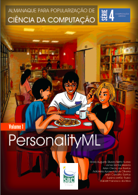

Publications
2016
- Costa, A., Bezerra, J., Azzi, G., Rodrigues, L., Becker, T. R., Herdt, R. G., Machado, R. (2016). Verigraph: A System for Specification and Analysis of Graph Grammars. In Brazilian Symposium on Formal Methods (pp. 78–94).
- Bezerra, J., Ribeiro, L. (2016). Calculation and Applications of Concurrent Rules In Escola de Informática Teórica e Métodos Formais (Brazilian Symposium on Formal Methods School) (pp. 135–144).
- Bezerra, J. S.; Costa, A.; Ribeiro, L.; Cota, E. Formal Verification of Health Assessment Tools: a Case Study. (Extended Version) In: Electronic Notes in Theoretical Computer Science, 324, 31–50.

PersonalityML
Nunes, M.A.S.N.; Bezerra, J. S.; Santos, A. C.; Oliveira, A. A.; Santos, J. C.; Russo, S. L.; Silva, G. F. Almanaque para Popularização de Ciência da Computação. Série 4: Computação Afetiva; Volume 1: PersonalityML. 2. ed. Porto Alegre: SBC, 2016. v1. 40p.
 Introdução à Computação Afetiva
Introdução à Computação Afetiva
Bezerra, J. S.; LONGUI, M. T; Nunes, M.A.S.N.; Barbosa, A. S. Almanaque para Popularização de Ciência da Computação.Série 4: Computação Afetiva; Volume 2: Introdução à Computação Afetiva. 1. ed. Porto Alegre: SBC, 2016. v2. 36p.
2015
- Bezerra, J. S.; Costa, A.; Ribeiro, L.; Cota, E. Formal Verification of Health Assessment Tools: a Case Study. (Short Version) In: III Workshop Escola de Informática Teórica, 2015, Porto Alegre. Anais do WEIT 2015, 2015. p. 144-151.
2013
- Bachelor Thesis
Bezerra, Jonas Santos; Guimarães, Tássio Augusto da Cruz. 14factory: Uma Ferramenta para Automatização da Criação de Instâncias de Serviços na Nuvem. Advisor: Prof. Dr. Tarcísio da Rocha. Departamento de Computação/Universidade Federal de Sergipe – São Cristóvão: UFS, 2013. 95f. - PersonalityML 2.0
Bezerra, J. S.; Nunes, M. A. S. N.; Oliveira, A. A. PersonalityML 2.0 - Personality Markup Language. 2013. Patente: Programa de Computador. Número do registro: BR5120130007380, Instituição de registro: INPI - Instituto Nacional da Propriedade Industrial. - Guimarães, T. A. C.; Castro, V.; Bezerra, J. S.; Rocha, T. 14Factory: Facilitando a disponibilização de novos serviços na nuvem. In: Terceira Semana de Informática, 2013, Itabaiana - SE. III Semana de Informática, 2013. v1. p.18-21.
2012
- Nunes, M. A. S. N.; Bezerra, J. S.; Oliveira, A. A. PersonalityML: A Markup Language to Standardize the User Personality in Recommender Systems. GEINTEC - Gestão, Inovação e Tecnologias, v. 2, p. 255-273, 2012.
- Leao, L. P.; Bezerra, J. S.; Matos, L. N.; Nunes, M. A. S. N. Detecção de Expressões Faciais: Uma Abordagem Baseada em Análise do Fluxo Óptico. GEINTEC - Gestão, Inovação e Tecnologias, v. 2, p. 472-489, 2012.
2011
- Nunes, M. A. S. N.; Rehem, A.; Bezerra, J. S.; Rocha, A.; Santos, C. A. S. Uso do kinect para a extração de características afetivas do usuário. In: SBIE/WIE - XXII Simpósio Brasileiro de Informática na Educação / XVII Workshop de Informática na Escola, 2011, Aracaju. Anais do XXII SBIE - XVII WIE, 2011.
2010
- Nunes, M. A. S. N.; Bezerra, J. S.; Oliveira, A. A. Estendendo o conhecimento afetivo da EmotionML. In: IHC, 2010, Belo Horizonte - MG. Anais do IX Simpósio de Fatores Humanos em Sistemas Computacionais, 2010. v. 1. p. 197-200.
Softwares I worked on
- Verigraph
Software specification and verification tool based on graph rewriting - e-PP
Plataforma de Processo Eletrônico (Eletronic Process Platform) - PersonalityML
Personality Markup Language